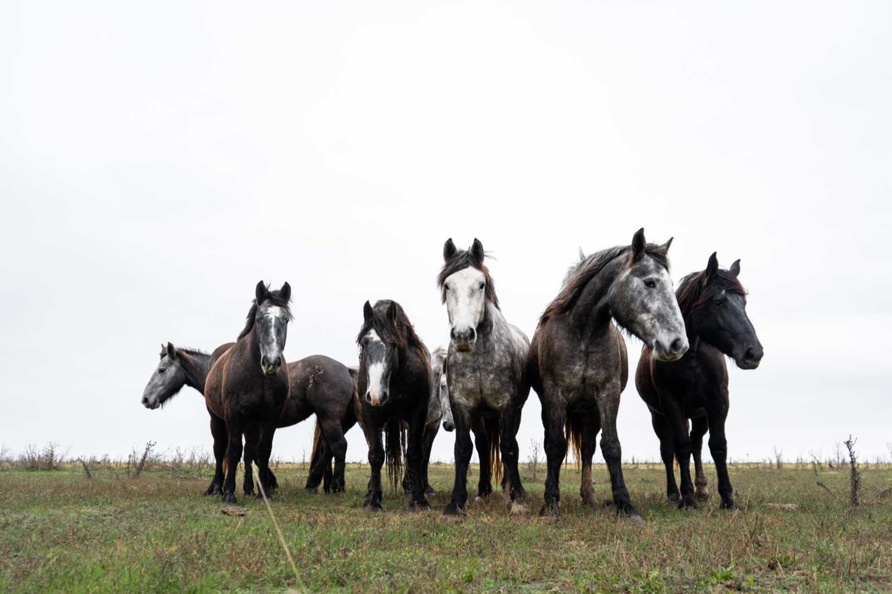
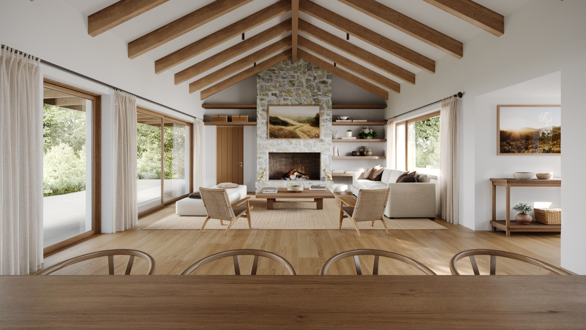
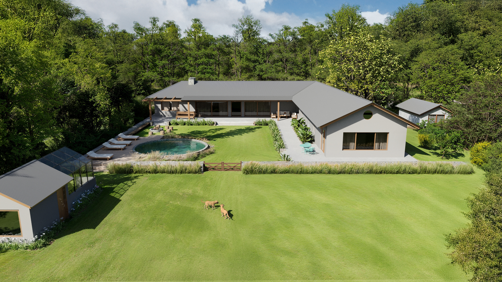
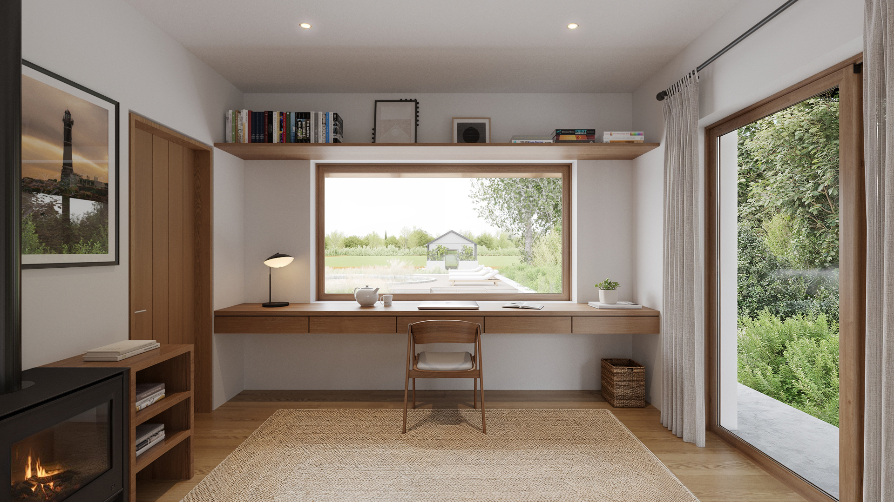
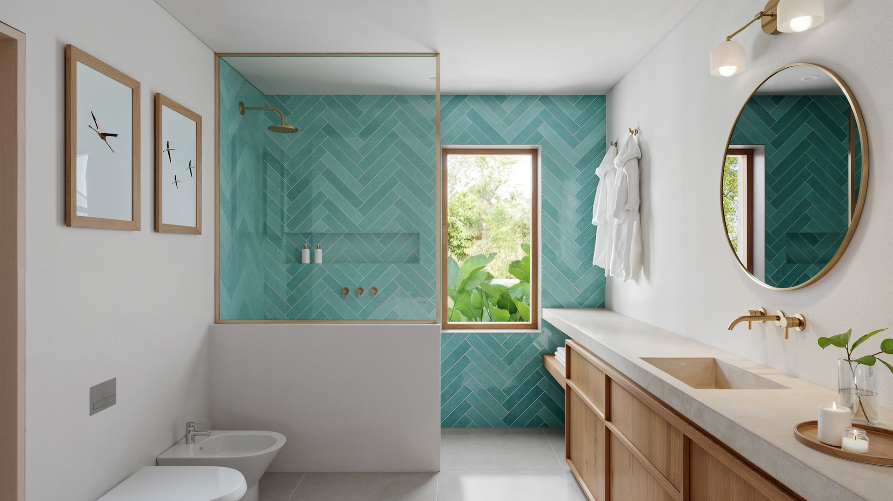

Chacras de Murray
Lugar de retiro familiar para disfrutar del paisaje y el polo
CLIMA /
Templado Subtropical
BIOMA /
Pampa
TERRENO /
3.000 m²
ÁREA CUBIERTA /
400 m²
UBICACIÓN /
Buenos Aires,
Argentina


Este proyecto es una reinterpretación contemporánea de la tipología rural tradicional. A partir de una estructura clara tipo galpón, con cubierta a dos aguas, recupera la lógica constructiva y la sobriedad de la tradición argentina.
La vivienda se organiza en dos alas en forma de L, cuidadosamente orientadas según el programa y su uso a lo largo del año. Esta disposición permite que ciertos espacios reciban mayor radiación solar en invierno, mientras que otros permanecen más protegidos, optimizando el confort térmico de manera pasiva.



Todos los ambientes cuentan con doble orientación, asegurando ventilación cruzada y una relación constante con el exterior. Así, la casa se percibe siempre rodeada de paisaje, que pasa a formar parte del interior.
El conjunto contiene el jardín, generando un microclima reparado del viento, donde la vegetación puede desarrollarse en condiciones favorables. El área de la pileta se ubica en un sector más sombreado, garantizando confort durante los meses más calurosos.
Una galería continua y profunda recorre todo el perímetro, funcionando como espacio intermedio entre el afuera y el adentro. Su dimensión permite proteger del sol alto en verano y habilitar su ingreso en invierno, mejorando el comportamiento térmico del conjunto.
La doble altura de los espacios principales contribuye a mantener temperaturas más frescas, reduciendo la necesidad de sistemas mecánicos de climatización.

La arquitectura se desarrolla por debajo del nivel natural del terreno, modificando la percepción del paisaje y generando una experiencia de privacidad.
La materialidad responde tanto a una búsqueda estética como a criterios de durabilidad y eficiencia. Madera, piedra y superficies claras se combinan en una lógica constructiva sencilla, pensada para un bajo mantenimiento y un buen desempeño en el tiempo.
Una casa con todo lo necesario para vivir bien, sin excesos, pensada para durar.

